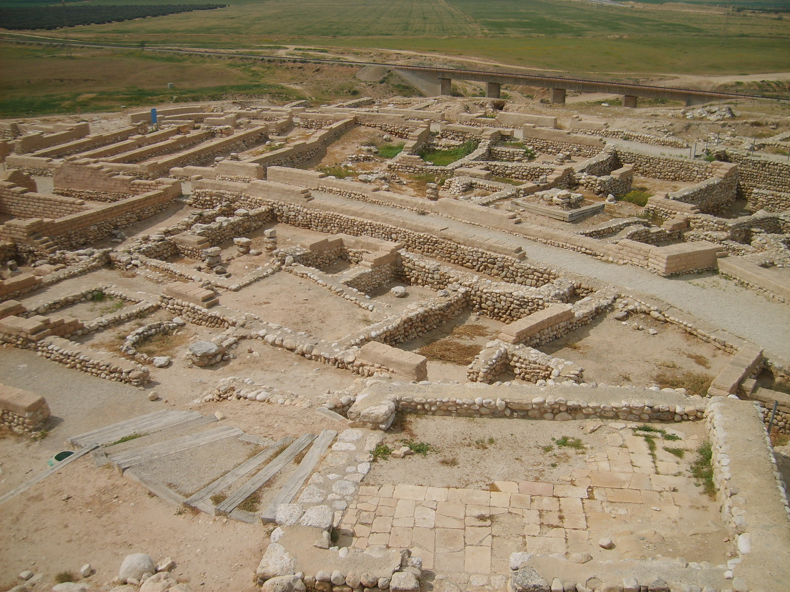

Tel Beersheba (Ancient City)

- Find Name
- Tel Beersheba (Ancient City)
- Description
- A planned fortified Judahite town at the confluence of Nahal Beersheba and Nahal Hebron, and a UNESCO World Heritage Site with Megiddo and Hazor. The 9th-8th century BC town is a textbook Judahite plan: a casemate wall, a four-chambered gate with benches and a drainage channel, a ring road, storehouses (including a 600 sq m storehouse), a governor's residence, four-room houses, and a deep well outside the gate dug about 69 m to groundwater. Its water system (uncovered 1993-1995) used a dam and channels to lead Hebron wadi floodwater into a large underground reservoir reached by a 20 m shaft with stairs; the reservoir plaster still bears workers' fingerprints. This entry covers the town, gate, well and water system only; the Beersheba Four-Horned Altar has its own entry.
- Historical Period
- Iron Age I–II
- Evidence Class
- Contextual
- Interpretations
- The Iron Age town and its 701 BC destruction (probably Sennacherib's campaign) are secure. The patriarchal link is debated: the tell itself shows Iron Age occupation, and some scholars place Bronze Age patriarchal Beersheba in the valley under the modern city rather than on the tell, so the wells of Genesis are not claimed as the excavated well by the gate. Aharoni's link of the dismantled horned altar to Hezekiah's reform (2 Kings 18:4) is presented in that entry, not re-argued here.
- Alternative Names
- Tel Beer-Sheva; Tell es-Seba; Beersheba Tell
- Related Places
- Related Books
- Related People
- Scripture Illuminated
- Biblical Significance
- 'From Dan to Beersheba' was Israel's shorthand for the whole land, and Beersheba was its southern anchor — Abraham's and Isaac's wells, Samuel's sons judging there, and the edge of Judah's settled south. The planned town, with its gate benches where elders would sit and its floodwater reservoir for siege, is that proverbial border town in stone: orderly, watered and ready for war.
- Artifact Date
- c. 12th century BC - 701 BC (Iron Age town; destroyed end of 8th century BC)
- Current Location
- In situ, Tel Beersheba National Park, Israel
- Date Discovered
- 1969-1976 (Aharoni and Herzog, Tel Aviv University); 1993-1995 (water system, Herzog)
- Discovery Location
- Tel Beersheba (Tell es-Seba), northern Negev, Israel
- Timeline Era
- Divided Monarchy
Awaiting Review Not yet checked against scholarly sources. Treat its claims as provisional until this entry is reviewed. About verification
Last reviewed: not yet reviewed